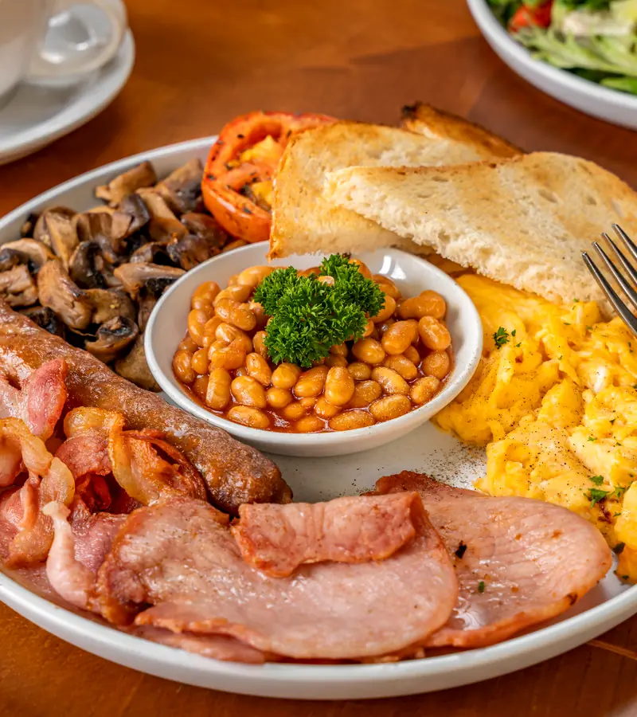
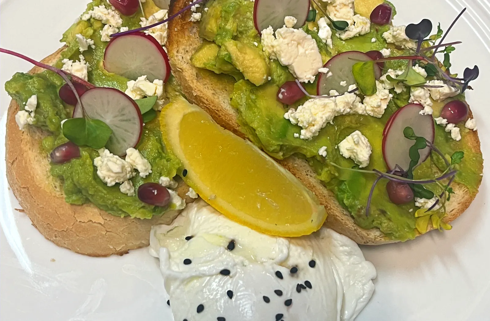
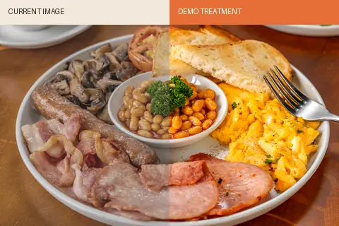

The Big ‘Delux’
Bacon, eggs, sausage, beans, mushrooms and toast.

49 Elizabeth Street / Hobart
All-day breakfast, proper coffee and a warm table in the heart of the city.
More than breakfast
Beaujangles has welcomed generations of Hobart locals with food made on the premises, freshly brewed coffee and a table that feels familiar.
Meet us in the city
